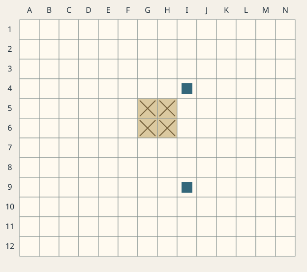

Одинаковые правила, разная история
Все карты совпадают с сеткой нативного пакета: 14 × 12, клетка — 5 футов. G5/H5/G6/H6 — трудная местность; I4/I9 — половинное укрытие. Остальные детали описания декоративны, пока ведущий не изменил поле штатно.
Расстановка и параметры
Герои в порядке списка встречи: B3, B4, B5, B6, C3, C4, C5, C6. Противники: L3, L4, L5, L6, M3, M4. Используйте только нужное число фигур.
Для 3 / 4 / 5 / 6 / 7 / 8 игроков: 2 / 3 / 3 / 4 / 5 / 6 противников, здоровье каждого 12 / 14 / 16 / 18 / 20 / 22. Защита 12; скорость 20 футов; одна ближняя атака +3, 1d4+1 дробящего урона, досягаемость 5 футов.
Перед запуском встречи герои должны находиться в её локации. После сыгранного перехода ведущий перемещает участвующих персонажей обычным действием приложения; герои в других местах автоматически в бой не попадают.
Враги — простая поддерживаемая модель. Мирные решения и ограничения сцены описаны отдельно; ведущий подтверждает их результат. После первого раунда напомните пути переговоров или отступления. Встречи не запускаются автоматически.
Козы хотят носить банты
Во второй встрече герои видят, что козы вышли к малиновым лентам. Ведущий сначала описывает мирное возвращение в загон. Стычка возможна только если игроки сознательно выбирают игровое физическое противостояние; появление животных её не запускает.
Цель и выходы
Освободить сухую дорожку и оставить прищепки во дворе. Побеждать всех коз не требуется: убрать ленты, открыть обычную калитку и дать животным пройти достаточно. Герои могут отойти под навес и позвать хозяйку, потеряв часть оформления.
Наблюдение за лентой или прямой вопрос Нерпе раскрывает интерес животных без броска. Герои убирают малиновые украшения в закрытую корзину, а хозяйка зовёт коз через обычную калитку. Можно также отступить под навес и дождаться её, позволив одной ленте остаться погрызенной. Ни улика, ни сухой путь не требуют боя.
Поведение противников
Обычная ухоженная коза с мягкой лентой у ошейника; ей интересны болтающиеся банты, а не герои сами по себе. Подача нелетальная, без ранений животных крупным планом.
Козы движутся к видимой ленте и используют только предусмотренную ближнюю атаку +3 с уроном 1d4+1, если выбрана стычка. Они не преследуют героев вне двора. Не добавляйте автоматическое сбивание, захват, особые реакции или новые проверки. При возможности мирного прохода ведущий предлагает закончить сцену.
Размер группы
3 игрока: 2 козы, 12 HP каждой; 4: 3 козы, 14 HP; 5: 3 козы, 16 HP; 6: 4 козы, 18 HP; 7: 5 коз, 20 HP; 8: 6 коз, 22 HP. Всегда AC 12, одна ближняя атака +3, урон 1d4+1. При 3 игроках оставьте один явный маршрут в загон; при 6–8 распределите роли между лентами, калиткой и людьми, без дополнительных целей.


Сетка 14×12, столбцы A–N, строки 1–12. Центральные клетки F5–I8 заняты мокрой тканью и считаются трудной местностью. Корзины у B4 и M9 дают обычное укрытие. По краям A–C и L–N остаются свободные пути; калитка загона у N3, безопасный навес у A10. Все участники начинают в этом дворе, без скрытых подкреплений.
Ленты кружатся без разрешения
На утреннем обходе седьмой встречи маленькие природные ветрошмыги играют свободными лентами над двором. Это не отдыхающие муниципальные чары. Ведущий описывает их интерес и мирный вариант; только осознанный выбор группы открывает отдельную стычку.
Цель и выходы
Оставить видимым вход в уже выбранный праздничный двор, убрав болтающиеся ленты с прохода. Важен понятный вход, а не поимка существ. Можно закрыть этот вход и использовать проверенную боковую дверь, пожертвовав частью оформления и удобства.
Сложите украшения в корзину либо перенесите уже имеющуюся свободную ленту к пустому краю двора и отойдите. Существа следуют за движущимся концом; ведущий разрешает обычное наблюдение без обязательного броска. Можно просто открыть боковой вход и позволить игре закончиться самой. Нет нужды вызывать шторм, чинить магию или принуждать отпускников работать.
Поведение противников
Небольшое природное существо, похожее на прозрачный клубочек с глазами и хвостом из завитого воздуха; оно играет, не понимая назначения украшений.
Ветрошмыги держатся возле лент на доступной для обычного действия высоте. Используют только базовую ближнюю атаку +3 с уроном 1d4+1; не получают полёта вне досягаемости, неуязвимости, толчков или управления погодой. После удаления лент из прохода теряют интерес к этому месту. Уход группы не вызывает преследования.
Размер группы
3 игрока: 2 ветрошмыга, 12 HP; 4: 3, 14 HP; 5: 3, 16 HP; 6: 4, 18 HP; 7: 5, 20 HP; 8: 6, 22 HP каждому. AC 12, одна ближняя атака +3, урон 1d4+1 при любом составе. При 3 игроках достаточно одного свободного входа; при 6–8 герои одновременно работают с украшениями, встречают гостей и проверяют выход, без роста обязательных задач.

Сетка 14×12, A–N и 1–12. В центре F5–I8 на полу лежат свернутые декоративные полотнища: трудная местность. Низкие ящики у B3 и M10 дают обычное укрытие. Главный вход у A6, боковой у N9; оба имеют свободный край шириной две клетки. Участники начинают во дворе, все существа остаются доступными обычным действиям.
Рыцари самого мягкого поклона
В шестой встрече взрослые участники любительского клуба предлагают добровольную сценическую стычку вместо одного номера. Требуется ясное согласие участников и доступный выход для зрителей. Отказ просто оставляет другой формат; встреча никогда не начинается из-за проваленного разговора.
Цель и выходы
Провести короткий согласованный номер с понятным завершением и свободным уходом. Победа над всеми участниками необязательна; любой может прекратить упражнение, поклониться и перейти к пантомиме. Здесь проверяется способность закончить публичное действие, а не право управлять клубом.
Предложите клубу показать поклон, придержать собственные декорации или перенести громкое приветствие на момент до тихой игры. Они свободно выбирают участие либо уход. Никакой успешной проверки, платы, победы или обещания от отдыхающих чар не нужно. Даже при отказе от всех вариантов герои могут проводить другой номер без клуба.
Поведение противников
Взрослый горожанин в смешном картонном нагруднике поверх обычной одежды. Игровые HP описывают сценическую выносливость; исчезновение запаса означает выход из номера без подробностей травмы.
Участники применяют только одну предусмотренную ближнюю атаку +3 с уроном 1d4+1, без особых приёмов и насильственного перемещения. Не атакуют уходящих зрителей, не догоняют прекратившего участие героя. Если любой участник просит закончить, ведущий останавливает добровольный номер и описывает общий поклон; это согласие в сцене, не новая автоматическая боевая способность.
Размер группы
3 игрока: 2 участника клуба, 12 HP; 4: 3, 14 HP; 5: 3, 16 HP; 6: 4, 18 HP; 7: 5, 20 HP; 8: 6, 22 HP. Всегда AC 12, одна ближняя атака +3, урон 1d4+1. При малой группе приглашение не требует участия всех; при 6–8 часть героев может вести гостей и проверять проход, меняя роли после общего поклона.

Сетка 14×12, A–N и 1–12. Центральный коврик F5–I8 с крупными складками — трудная местность. Крепкие низкие скамьи B4 и M8 дают обычное укрытие, отдельные проходы вдоль A–C и L–N остаются свободны. Зрители стоят за краем площадки; выход у N6 не перекрывают. Все участники номера начинают на площадке по взаимному согласию.